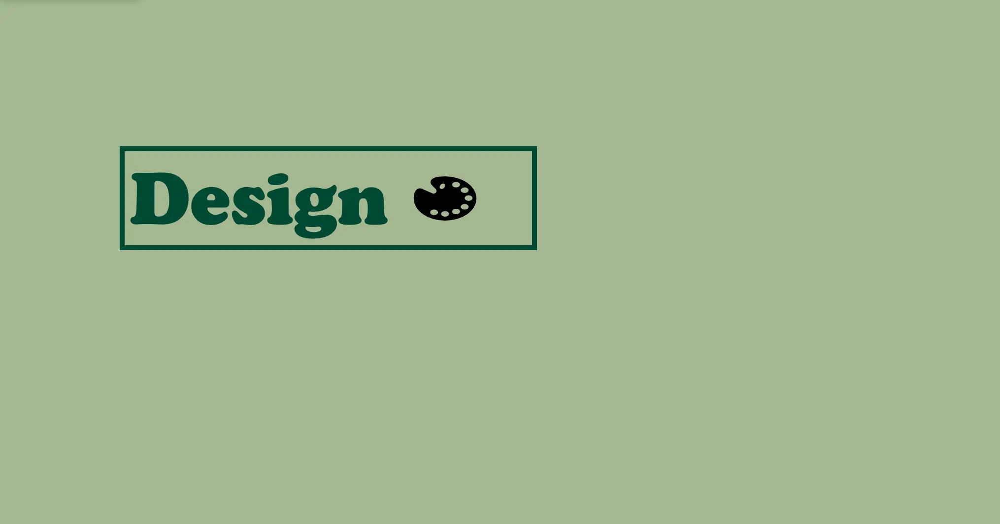
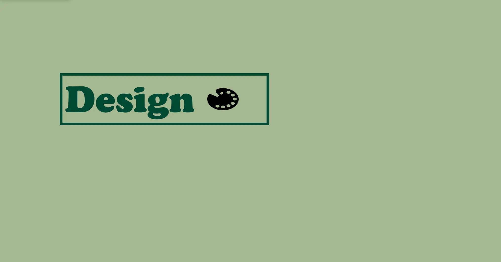

TEMA 3
GRUNDLÆGGENDE UX/UI
I tema 3 designede og lavede vi vores egen hjemmeside. Vi lærte om User Experience design(UX) og User Interface design. I temaet fik vi den grundlæggende forståelse for interaktionen mellem brugere og brugergrænseflader. Dereudover lærte vi om forskellige research metoder f.eks hvordan man laver desk research, interview, survey og observation research. Vi lærte om forskellige tests man kan lave på sin design og produkter. Og vi lærte om hvordan man laver en prototype for vores website i Figma.
03.01.01 EMNSITE
I tema 3 var vores opgave at lave og designe vores egen hjemmeside. Vi kunne selv vælge hvad websiten handlede om. Jeg valgte at lave en vegansk guide til København website. I denne opgave lærte vi at udvikle vores idé med at lave research og teste vores idéer. Vi skulle dokumentere vores proces og til sidst lavede vi en præsentation af vores website.
Research og idéudvikling
Desk research og inspiration:
Interview:
Observation:


Design, wireframes og prototype


Tests
5 sec test:
Lighthouse test:


Kodning


Min website
Præsentation

 
